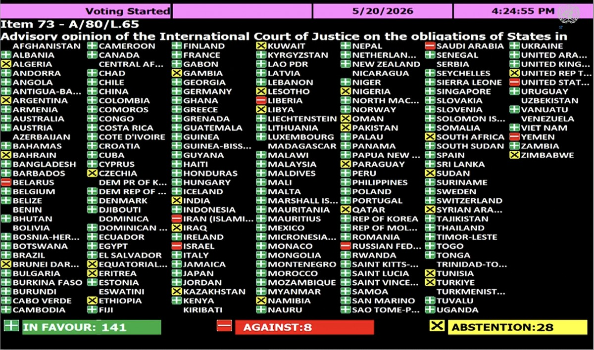

© Unsplash/Juniper Photon Fossil fuels emit air pollutants that are harmful to both the environment and public health.
ON SOURCE: UN NEWS
General Assembly backs historic World Court climate crisis ruling
20 May 2026 Climate and Environment
A landmark General Assembly resolution adopted on Wednesday is “a powerful affirmation” of international law, climate justice and science, according to UN chief António Guterres.
The Secretary-General saidit makes clear Member States’ responsibility to protect their own people from what is an “escalating climate crisis”.
The resolution drawn up by Vanuatu - a Pacific island nation on the frontline of the climate crisis, and several other countries - was adopted after intense discussion including multiple proposed amendments with 141 votes in favour, eight against and 28 abstentions.
Those voting against were Belarus, Iran, Israel, Liberia, Russia, Saudi Arabia, the US and Yemen.
When the International Court of Justice (ICJ), the UN’s principal judicial body, ruled in July 2025 that States have an obligation to protect the environment from greenhouse gas (GHG) emissions, the decision was hailed as a breakthrough. The UN chief described it simply as “a victory for our planet”.
Legal duty’
The Court also ruled that if States breach these obligations, they are legally responsible and may be legally required to stop the wrongful conduct, offer guarantees that it won’t happen again, and make full reparation, depending on the circumstances.
Although the ICJ’s advisory opinions are not binding, they carry significant legal and moral authority – helping to clarify and develop international law by defining States’ legal obligations.
Wednesday’s General Assembly adoption following up on the ruling, sends a strong message that tackling the climate crisis is a legal duty under international law, and not just a political choice. “The world’s highest court has spoken,” responded Mr. Guterres. “Today, the General Assembly has answered.”
What’s in the resolution?
The resolution calls on all UN Member States to take all possible steps to avoid causing significant damage to the climate and environment, including emissions produced within their borders, and to follow through on their existing climate pledges under the Paris Agreement.
Governments are urged to cooperate in good faith and continuously coordinate efforts to tackle climate change globally and ensure that climate policies safeguard the rights to life, health, and an adequate standard of living.
In a statement released after the General Assembly vote, Mr. Guterres declared that those least responsible for climate change are paying the highest price, and that the path to climate justice “runs through a rapid, just, and equitable transition away from fossil fuels towards renewable energy.”
The UN Secretary-General noted that renewables have proved to be the cheapest and most secure form of energy and that the goal of keeping global temperature rises to no more than 1.5 degrees above pre-industrial levels is still within reach.
- The UN General Assembly (UNGA) adopted the resolution “Advisory opinion of the International Court of Justice on the obligations of States in respect of climate change”
- The resolution, prepared by Vanuatu and several other countries, was adopted with 141 in favour, 8 against and 28 abstentions

ON SOURCE: UN NEWS